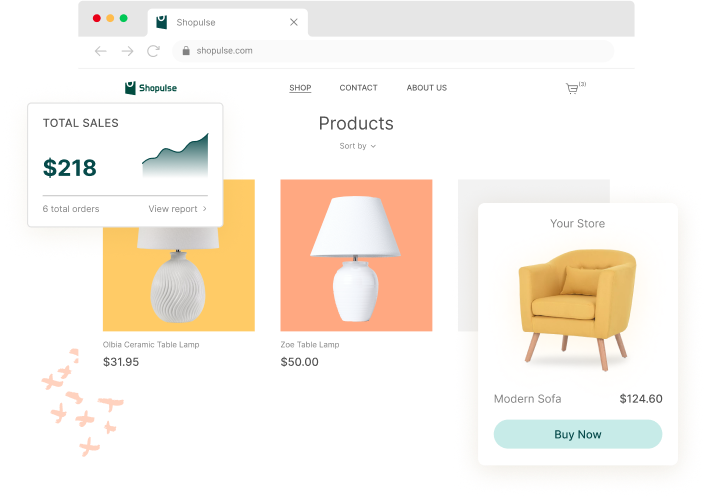
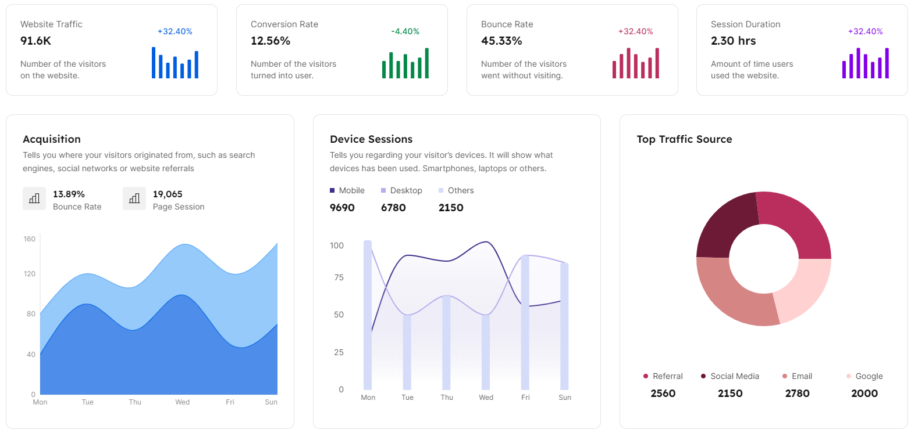
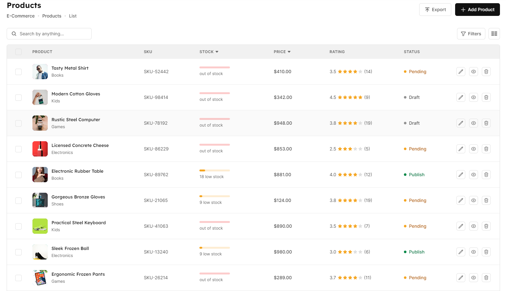

Deewid Landing V2 expands the first version with a richer presentation layer, a dedicated pricing page, and reusable storefront state pages for unavailable or missing shops.

This version is designed for ecommerce teams that need clearer product storytelling, stronger pricing communication, and dedicated pages for edge cases around store access.
Use Deewid V2 to present your offer with cleaner hierarchy, stronger calls to action, and a structure that feels more production-ready than the first version.
It also includes dedicated storefront state pages so missing or unavailable stores still produce a branded experience instead of a dead end.


More sections and better progression than V1.
Separate pricing communication for clearer offer comparison.
Branded fallbacks for missing or unavailable shops.
HTML partials keep the front-end easier to evolve.
V2 sits between the lightweight landing in V1 and the future Laravel application in V3.
Missing stores and temporarily unavailable stores still get dedicated public pages.
The project builds to plain static files, which keeps GitHub Pages deployment straightforward.
Review the pricing page and the two store-state pages that will later inform the Laravel version.